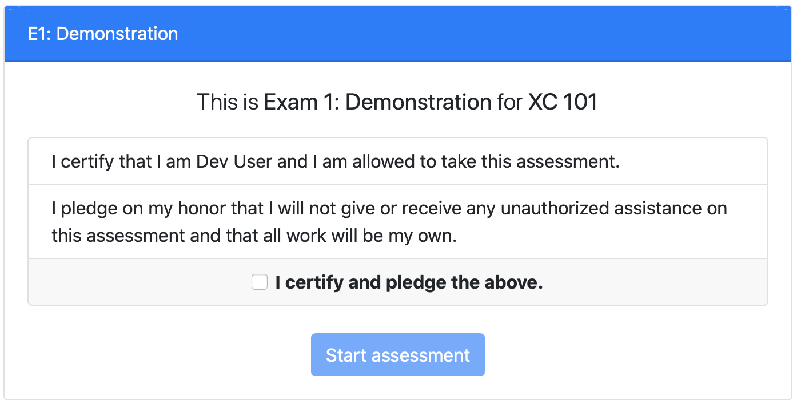

Thanks to Tim Yang, PrairieLearn exams now default to starting with an identity certification and honor code pledge:
The "Start assessment" button is disabled until the student clicks the checkbox to "certify and pledge the above."
You can remove the honor code by setting "requireHonorCode": false as a top-level option in the infoAssessment.json file. See the documentation for details.
The text of the honor code was based on the University of Maryland's Honor Pledge and the University of Rochester's Honor Pledge for Exams. This is a "modified" honor code (McCabe et al., 2002), as opposed to "traditional" codes that typically also require students to report any violations of the honor code they observe.